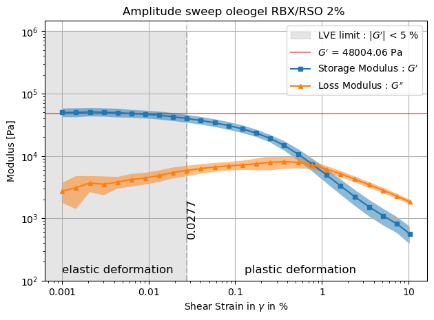
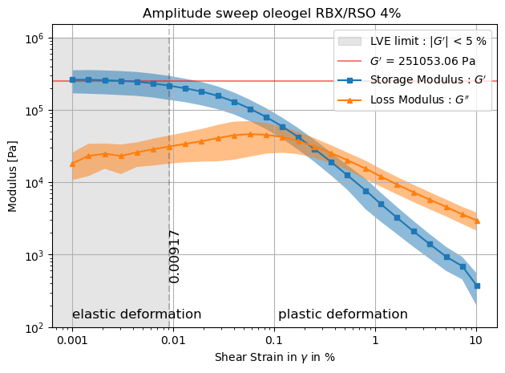
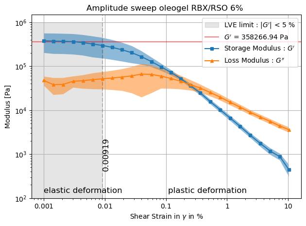
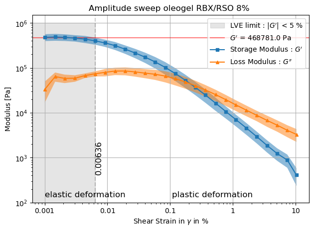

Rheology (REHO)#
"""Tool to plot infer some analysis on DSC thermograms"""
from dataclasses import dataclass, field
from os import listdir
import matplotlib.pyplot as plt
from pandas import DataFrame, read_csv, concat
from sklearn.linear_model import LinearRegression
#
import numpy as np
from scipy import sparse
from scipy.sparse.linalg import spsolve
# Global variables
PLOT_SINGLE_DATA = False
PLOT_M_SD = True
@dataclass
class Measurment:
"""Class to represent a measurment"""
filename: str
data: DataFrame = field(init=False)
def __post_init__(self):
self.data = read_csv(self.filename, skiprows=7, encoding='utf-16', sep='\t')
def clean(self, **kwargs):
"""Remove all rows with NaN"""
#self.data = self.data.dropna()
# keep only the column Temperature and Heat Flow
self.data = self.data[["Shear Strain","Storage Modulus", "Loss Modulus"]]
# drop first 2 rows
self.data = self.data.iloc[2:]
self.data = self.data.astype(float)
# use shear strain as index
def PlotterSingle(namedir, N, **kwargs):
measurments = []
exp = DataFrame()
for filename in listdir(namedir):
measurments.append(Measurment(namedir+"/"+filename))
measurments[-1].clean(**kwargs)
exp = concat([exp, measurments[-1].data], axis=1)
exp = exp.dropna()
if PLOT_SINGLE_DATA:
x = [a*100 for a in measurments[-1].data["Shear Strain"]]
y_SM = [a for a in measurments[-1].data["Storage Modulus"]]
y_LM = [a for a in measurments[-1].data["Loss Modulus"]]
# triangles for y_SM
plt.loglog(x, y_SM, marker="s", markersize=5)#, label = "Storage Modulus")
# squares for y_LM
plt.loglog(x, y_LM, marker="^", markersize=5)#, label = "Loss Modulus")
# addto legend that the triangles are for storage modulus and the squares for loss modulus
if PLOT_SINGLE_DATA:
plt.loglog([], [], marker="s", markersize=5, label = "Storage Modulus : "+r"$G^{\prime}$", color = "black")
plt.loglog([], [], marker="^", markersize=5, label = "Loss Modulus : "+r"$G^{\prime\prime}$", color = "black")
if PLOT_M_SD:
# multiply the shear strain by 100 to get the percentage
exp["Shear Strain"] = exp["Shear Strain"]*100
# print first relative difference of exp w.r.t Storage Modulus
# take the mean over all the columns with the same name
mean = exp.groupby(exp.columns, axis=1).mean()
std = exp.groupby(exp.columns, axis=1).std()
x = [a for a in mean["Shear Strain"]]
y_LM = [a for a in mean["Loss Modulus"]]
y_SM = [a for a in mean["Storage Modulus"]]
pct_list = mean.pct_change()
pct = pct_list.replace(np.nan, 0)
pct_list = pct.abs()
pct = pct_list[pct_list["Storage Modulus"] < 0.05]
l = len(pct)+1
tau = mean["Shear Strain"].iloc[l]
plt.fill_between([0, tau], 0, 1000000, color="gray",
alpha=0.2, label="LVE limit : $|G^{\prime}|$ < 5 %")
# maxstrain = pct["Shear Strain"].max()
plt.axvline(x=tau, color='black', linestyle='--', alpha = 0.2)
limit_LVE = mean["Storage Modulus"].iloc[:l].mean()
plt.axhline(y=limit_LVE, color='red', alpha = 0.5, label = r"$G^{\prime}$"+" = "+str(round(limit_LVE, 2))+" Pa")
# fill the area between the vertical line and the right border of the plot
# add the text "plastic deformation" between the vertical line and the right border of the plot
plt.text(tau+0.1, 150, "plastic deformation", fontsize=12, verticalalignment='center')
# on the other side of the vertical line, add the text "elastic deformation"
plt.text(1/1000, 150, "elastic deformation", fontsize=12, verticalalignment='center')
# add the value of tau on the vertical axis with 3rd decimal
plt.text(tau, 1000, str(round(tau, 5)), fontsize=12, verticalalignment='center',rotation=90)
plt.loglog(x, y_SM ,linewidth=1.5, label = "Storage Modulus : "+r"$G^{\prime}$", marker="s", markersize=5)
plt.loglog(x, y_LM ,linewidth=1.5, label = "Loss Modulus : "+r"$G^{\prime\prime}$", marker="^", markersize=5)
plt.fill_between(mean["Shear Strain"], mean["Storage Modulus"]-std["Storage Modulus"], mean["Storage Modulus"]+std["Storage Modulus"], alpha=0.5)
plt.fill_between(mean["Shear Strain"], mean["Loss Modulus"]-std["Loss Modulus"], mean["Loss Modulus"]+std["Loss Modulus"], alpha=0.5)
# add constant line for LVE limit
# from pct extract value of Shear Strain where the maximum of Storage Modulus is less than 0.05
plt.xlabel("Shear Strain in $\gamma$ in %")
plt.ylabel("Modulus [Pa]")
plt.title("Amplitude sweep oleogel RBX/RSO " +
str(N)+"% ")
mean = exp.mean(axis=1)
#mean.plot(color="black", legend=False, linewidth=1.5, figsize=(10, 5), label = "mean")
plt.grid()
#std = exp.std(axis=1)
#plt.fill_between(mean.index, mean-std, mean+std, color="C0", alpha=0.5, label = "std")
plt.tight_layout()
# on the y axis, the values for 100, 1000, 10000, 100000, 1000000, 10000000 in scientific notation
plt.yticks([100, 1000, 10000, 100000, 1000000], [r"$10^2$", r"$10^3$", r"$10^4$", r"$10^5$", r"$10^6$"])
plt.xticks([0.001, 0.01, 0.1, 1, 10], [r"$0.001$", r"$0.01$", r"$0.1$", r"$1$", r"$10$"])
plt.legend(loc = "upper right")
#plt.show()
#plt.legend(["mean", "std"])
#plt.savefig(namedir+".png", dpi=1000)
#def PlotterMultiple(namedir, displacement,cooling_or_heating, **kwargs):
#
# for N in [2, 4, 6, 8]:
# namedir = str(N)+"perc"
# measurments = []
# exp = DataFrame()
# for filename in listdir(namedir):
# measurments.append(Measurment(namedir+"/"+filename))
# measurments[-1].clean(**kwargs)
# exp = concat([exp, measurments[-1].data], axis=1)
# exp = exp.dropna()
#
# exp = exp+displacement*(N/2-1)
#
# # exp.plot(color = "gray", legend = False, alpha = 0.5, linewidth = 0.1, figsize=(10, 5))
# mean = exp.mean(axis=1)
# mean.plot(legend=False, linewidth=1, figsize=(7, 4), label=str(N)+"%")
# std = exp.std(axis=1)
# plt.fill_between(mean.index, mean-std, mean+std, alpha=0.5)
#
# plt.xlabel("Temperature [°C]")
# plt.ylabel("Heat flow endo up [mW]")
# plt.title("DSC thermogram oleogel RBX/RSO "+cooling_or_heating)
# plt.tight_layout()
# plt.grid()
# plt.legend(loc = "upper right")
# plt.savefig(cooling_or_heating+ namedir+".png", dpiF=1000)
p = 0.9
lam = 10**12
niter = 10
kwargs = {"p": p, "lam": lam, "niter": niter}
PLOT_SINGLE_DATA = False
PLOT_M_SD = True
N = 2
namedir = str(N)+"perc"
PlotterSingle(namedir, N, **kwargs)
/tmp/ipykernel_32855/2993238392.py:58: FutureWarning: DataFrame.groupby with axis=1 is deprecated. Do `frame.T.groupby(...)` without axis instead.
mean = exp.groupby(exp.columns, axis=1).mean()
/tmp/ipykernel_32855/2993238392.py:59: FutureWarning: DataFrame.groupby with axis=1 is deprecated. Do `frame.T.groupby(...)` without axis instead.
std = exp.groupby(exp.columns, axis=1).std()

N = 4
namedir = str(N)+"perc"
PlotterSingle(namedir, N, **kwargs)
/tmp/ipykernel_32855/2993238392.py:58: FutureWarning: DataFrame.groupby with axis=1 is deprecated. Do `frame.T.groupby(...)` without axis instead.
mean = exp.groupby(exp.columns, axis=1).mean()
/tmp/ipykernel_32855/2993238392.py:59: FutureWarning: DataFrame.groupby with axis=1 is deprecated. Do `frame.T.groupby(...)` without axis instead.
std = exp.groupby(exp.columns, axis=1).std()

N = 6
namedir = str(N)+"perc"
PlotterSingle(namedir, N, **kwargs)
/tmp/ipykernel_32855/2993238392.py:58: FutureWarning: DataFrame.groupby with axis=1 is deprecated. Do `frame.T.groupby(...)` without axis instead.
mean = exp.groupby(exp.columns, axis=1).mean()
/tmp/ipykernel_32855/2993238392.py:59: FutureWarning: DataFrame.groupby with axis=1 is deprecated. Do `frame.T.groupby(...)` without axis instead.
std = exp.groupby(exp.columns, axis=1).std()

N = 8
namedir = str(N)+"perc"
PlotterSingle(namedir, N, **kwargs)
/tmp/ipykernel_32855/2993238392.py:58: FutureWarning: DataFrame.groupby with axis=1 is deprecated. Do `frame.T.groupby(...)` without axis instead.
mean = exp.groupby(exp.columns, axis=1).mean()
/tmp/ipykernel_32855/2993238392.py:59: FutureWarning: DataFrame.groupby with axis=1 is deprecated. Do `frame.T.groupby(...)` without axis instead.
std = exp.groupby(exp.columns, axis=1).std()

Together#
#displacement = 1
#
#PlotterMultiple(namedir, displacement, cooling_or_heating, **kwargs)